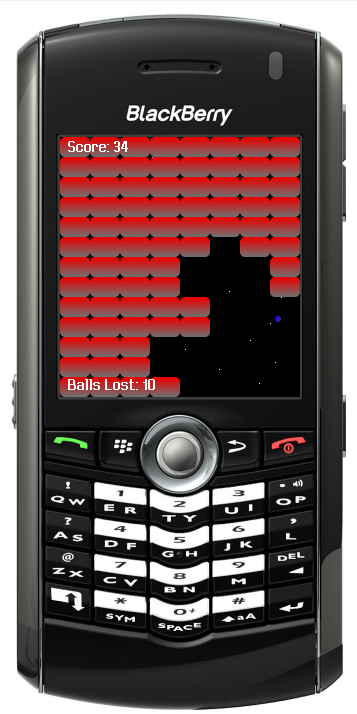
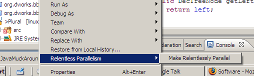
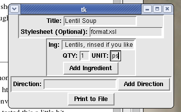

Software
Here you will find any software that I have written and feel like posting.
Source is usually either posted or available by contacting me, as sometimes it
takes up more space than I am willing to post. Enjoy.
Number 'N Date
An android app that allows you to quickly add a number and a date to a Google
Docs spreadsheet. You type in the number and hit 'post' and it posts it to the
spreadsheet you've previously chosen along with the current date. Useful for
tracking things like your weight, money spent, calories consumed, etc. etc. I
personally much prefer to have this data in a Google Docs spreadsheet where it
can be easily processed (and where I won't have to give my personal information
to yet another site). Number 'N Date is in the
Google Play
App Store. And it's also
open source, so you can go nuts.
POW! MIA
This is a Javascript game I wrote for Ludum Dare. The theme was "You are the Villain."
See if you can figure out why. Play the game here.
How Much Beer?
How Much Beer? or
howmuchbeer.com is a
crowd-sourced approach to party planning. Specifically, it is a web
site that allows you to figure out how much beer to buy for your next
party based on the reports of other beer drinkers. There is also
a How
Much Beer Android App so you can get this information
while at the beer store!
Arkan∞id Arkan∞id is an infinte
brick-breaking game in the spirit of Breakout or Arkanoid. It runs
forever with constant space overhead and low CPU utilization. It's
a Blackberry application. Because it's the result of a
SIGBOVIK submission, it
may not be fun, per say.
Screenshots:

PLURAL/NIMBY Plural is a modular static
analysis for Java that can help programmers ensure that they are using
and implementing object protocols correctly. While I have worked on
both programs, PLURAL is a direct result of the research work of Kevin Bierhoff while
NIMBY, a concurrent version of the same analysis, is the direct result
of my own research.
Crystal Java Dataflow Analysis Framework
Crystal is a project that I have been helping to create with many
member of my research group. It is a great framework for designing
your own Java AST-walker analyses or Java dataflow analyses. It
even provides some branch (but not path) sensitivity. Even better,
it's open source, and it's an Eclipse plug-in. Check it out.
Relentless Parallelism Eclipse Plug-in
This Eclipse plug-in is the implementation of the concepts embodied by
Relentless Parallelism described in my forth-coming
SIGBOVIK paper. Given Java code that
is normally sequential, this plugin will perform a series of rewriting steps
making your code Relentlessly Parallel, and will take advantage of
all cores and processors available to your virtual machine. Plugin and source
included (source is located inside the JAR file), as are installation and
usage instructions. All jokes aside, I could see the code being helpful to
someone trying to write a basic Eclipse/Java refactoring plugin.

List of Concurrent Java Programs
I didn't write most of these programs, but I couldn't think of a better
location on my site to link to this page without creating a whole new
top-level section. Imagine the horror. This is a research web site where
I list a bunch of open-source concurrent Java programs that I have found
and discuss their features. Could be useful for your own research, but might
not be.
My First Neural Anything
An extremely basic SML abstract data type representing a two input neuron,
along with a few examples of its usage as logic gates (AND, OR, NOT).
Recipe Creation Tool
This is a simple Python/Tkinter application for creating recipes in the
RecipeML format, like the ones on my
recipes page. The RecipeML standard is an attempt
to standardize recipe formats for online culninary sites. This is an XML-based
format, and my tool allows you to add ingredients, steps, and even specify
an XML style sheet. This is a work in progress, but now
it is in a state that is good enough to speed up my recipe printing time.
- recipeMaker.py
- To run: At command line type:
python recipeMaker.py
- Python must be installed along with Tkinter. I have tried this program on
OSX, and it failed because of an absence of Tkinter. Therefore, your mileage
may vary.

Ocaml to HTML Converter This is a pretty simple Python
script that converts Ocaml source code into decent looking, colored
html. It preserves your own spacing, at least as well as possible and then
converts keywords, strings, and comments into interesting colors. I have
only tested this a little bit though, so be aware (It should be able to
handle most code, I think...). I know it's kinda hackish; I did it late at
night. Also, looks like I need a Python to HTML script too!
Update: Found out from
Tom 7 that (as I already had guessed)
something way better exists for the same purpose.
HTMLize for
emacs will take the decorations that exist in emacs and make a HTML page
out of it, and of course it works for every language that emacs can handle!
My First Ocaml Parser This is a dead-simple parser written
in Ocaml as an excersize. My friend Rand told me that he was looking for a
way to examine a PHP expression and determine if it contained a string
operator (The '.' symbol). I thought that making a simple parser would
be the easiest way to do this, and it was very easy. However since my
parser doesn't actually recognize the entire PHP language, it really is
more of a proof of concept at this point. It was made using Ocamllex and
Ocamlyacc. I found out how to do it here. Here are the files of note:
- This is the file that is taken in by Ocamllex and produces the
lexer as output. It is full of regular expressions that define the
tokens of PHP.
- This is the file that is taken in by Ocamlyacc and produces the parser as
its output. It essentially defines a very small subset grammar for the PHP
language.
- The actual ML code that puts everything together and calls my parser
on the input stream.
- The Makefile
- The executable. Runs on Windows. Your mileage may vary.
|